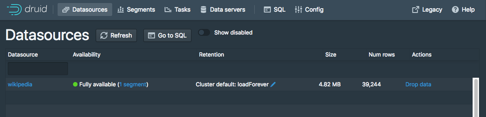

Table of Contents API documentation
This tutorial demonstrates how to perform a batch file load, using Druid's native batch ingestion.
For this tutorial, we'll assume you've already downloaded Druid as described in the single-machine quickstart and have it running on your local machine. You don't need to have loaded any data yet.
A data load is initiated by submitting an ingestion task spec to the Druid overlord. For this tutorial, we'll be loading the sample Wikipedia page edits data.
The Druid package includes the following sample native batch ingestion task spec at quickstart/wikipedia-index.json, shown here for convenience,
which has been configured to read the quickstart/wikiticker-2015-09-12-sampled.json.gz input file:
{
"type" : "index",
"spec" : {
"dataSchema" : {
"dataSource" : "wikipedia",
"parser" : {
"type" : "string",
"parseSpec" : {
"format" : "json",
"dimensionsSpec" : {
"dimensions" : [
"channel",
"cityName",
"comment",
"countryIsoCode",
"countryName",
"isAnonymous",
"isMinor",
"isNew",
"isRobot",
"isUnpatrolled",
"metroCode",
"namespace",
"page",
"regionIsoCode",
"regionName",
"user",
{ "name": "added", "type": "long" },
{ "name": "deleted", "type": "long" },
{ "name": "delta", "type": "long" }
]
},
"timestampSpec": {
"column": "time",
"format": "iso"
}
}
},
"metricsSpec" : [],
"granularitySpec" : {
"type" : "uniform",
"segmentGranularity" : "day",
"queryGranularity" : "none",
"intervals" : ["2015-09-12/2015-09-13"],
"rollup" : false
}
},
"ioConfig" : {
"type" : "index",
"firehose" : {
"type" : "local",
"baseDir" : "quickstart/",
"filter" : "wikiticker-2015-09-12-sampled.json.gz"
},
"appendToExisting" : false
},
"tuningConfig" : {
"type" : "index",
"targetPartitionSize" : 5000000,
"maxRowsInMemory" : 25000,
"forceExtendableShardSpecs" : true
}
}
}
This spec will create a datasource named "wikipedia",
We've included a sample of Wikipedia edits from September 12, 2015 to get you started.
To load this data into Druid, you can submit an ingestion task pointing to the file. We've included
a task that loads the wikiticker-2015-09-12-sampled.json.gz file included in the archive.
For convenience, the Druid package includes a batch ingestion helper script at bin/post-index-task.
This script will POST an ingestion task to the Druid overlord and poll Druid until the data is available for querying.
Run the following command from Druid package root:
bin/post-index-task --file quickstart/tutorial/wikipedia-index.json
You should see output like the following:
Beginning indexing data for wikipedia
Task started: index_wikipedia_2018-07-27T06:37:44.323Z
Task log: http://localhost:8090/druid/indexer/v1/task/index_wikipedia_2018-07-27T06:37:44.323Z/log
Task status: http://localhost:8090/druid/indexer/v1/task/index_wikipedia_2018-07-27T06:37:44.323Z/status
Task index_wikipedia_2018-07-27T06:37:44.323Z still running...
Task index_wikipedia_2018-07-27T06:37:44.323Z still running...
Task finished with status: SUCCESS
Completed indexing data for wikipedia. Now loading indexed data onto the cluster...
wikipedia loading complete! You may now query your data
Once the data is loaded, please follow the query tutorial to run some example queries on the newly loaded data.
If you wish to go through any of the other ingestion tutorials, you will need to shut down the cluster and reset the cluster state by removing the contents of the var directory under the druid package, as the other tutorials will write to the same "wikipedia" datasource.
Let's briefly discuss how we would've submitted the ingestion task without using the script. You do not need to run these commands.
To submit the task, POST it to Druid in a new terminal window from the druid-latest directory:
curl -X 'POST' -H 'Content-Type:application/json' -d @quickstart/tutorial/wikipedia-index.json http://localhost:8090/druid/indexer/v1/task
Which will print the ID of the task if the submission was successful:
{"task":"index_wikipedia_2018-06-09T21:30:32.802Z"}
To view the status of the ingestion task, go to the overlord console: http://localhost:8090/console.html. You can refresh the console periodically, and after the task is successful, you should see a "SUCCESS" status for the task.
After the ingestion task finishes, the data will be loaded by historical nodes and available for querying within a minute or two. You can monitor the progress of loading the data in the coordinator console, by checking whether there is a datasource "wikipedia" with a blue circle indicating "fully available": http://localhost:8081/#/.

For more information on loading batch data, please see the batch ingestion documentation.